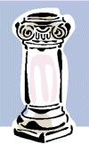

The Globus Toolkit provides three elements necessary for computing in a Grid environment. The first is Resource Management and it involves allocating resources provided by a Grid. The second is Information Services and it provides information about Grid resources. The third is Data Management and it involves accessing and managing data in a Grid environment.
The composition of the Globus Toolkit can be pictured as three pillars, where each pillar provides solutions in one of the three areas described above.
| Resource Management |
Information Services |
Data Management |
|  | ||
|
The Globus Toolkit | ||
The first pillar of the Globus Toolkit provides Resource Management. Resource Management involves the allocation and management of Grid resources. It includes components like GRAM, DUROC, and GASS.
The second pillar of the Globus Toolkit is Information Services. Information Services provide information about Grid resources. This area includes MDS, which provides the GIIS and GRIS components.
The third pillar of the Globus Toolkit is Data Management. Data Management involves the ability to access and manage data in a Grid environment. This includes components such as GridFTP, which is used to move files between Grid-enabled storage systems.